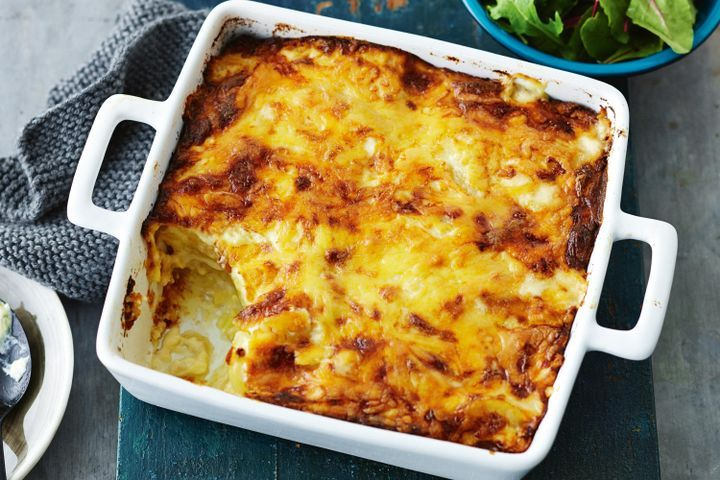

Cheesy Potato Bake

Description
I don’t know about you, but whenever I serve a potato bake to family or friends they’re so grateful. It’s as though I read their mind and have given them what they were secretly craving. This cheesy potato baake will have you requesting it for years to come.
Ingredients
- 1kg washed white potatos
- 250g bacon rashers, diced fine
- 500ml thickened cream
- 2 packets of Maggi cheese & bacon mix
- 3 cups of shredded cheese
- Salt and pepper to taste
Method
- Preheat oven to 180C/350F.
- Thinly slice the potatos and chop bacon then add to a baking dish.
- In a mixing bowl mix the thickened cream and Maggi mix's untill well combined. t]Then pour evenly over potatos in baking dish.
- Add chees evenly to the top then cover in aluminimum foil.
- Bake until potatos are soft then remove the foil and bake until cheese is golden.
- Set aside for 10 mins to cool slightly then serve.
Home